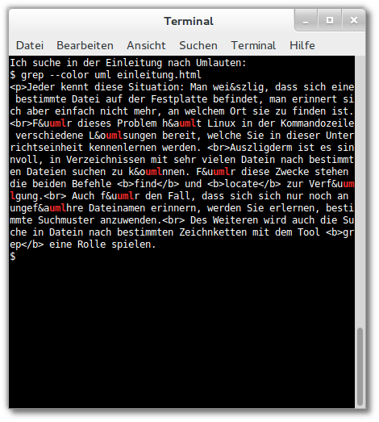

Einleitung
Jeder kennt diese Situation: Man weiß, dass sich eine bestimmte Datei
auf der Festplatte befindet, man erinnert sich aber einfach nicht
mehr, an welchem Ort sie zu finden ist.
Für dieses Problem hält Linux in der Kommandozeile verschiedene
Lösungen bereit, die Sie in diesem WebQuest kennenlernen.
Die beiden Befehle find und locate helfen Ihnen
'verlorene' Dateien oder Verzeichnisse wieder zu finden.
Auch für den Fall, dass sie sich nur noch ungefähr an den Dateinamen
erinnern, lernen Sie, bestimmte Suchmuster anzuwenden.
Des Weiteren wird auch bei der Suche nach Begriffen in Dateien
das Tool grep helfen.